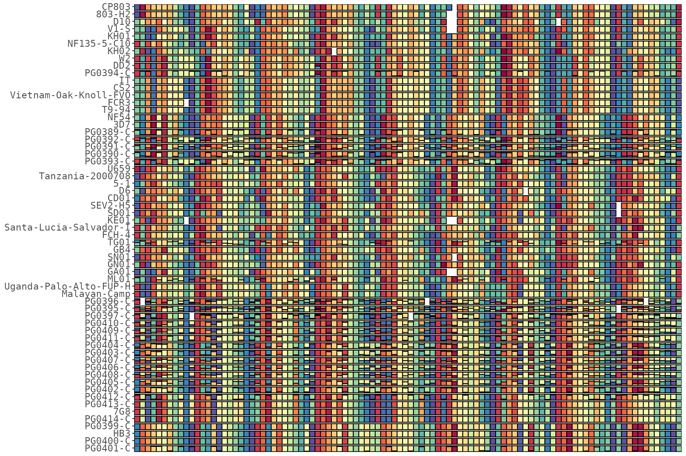
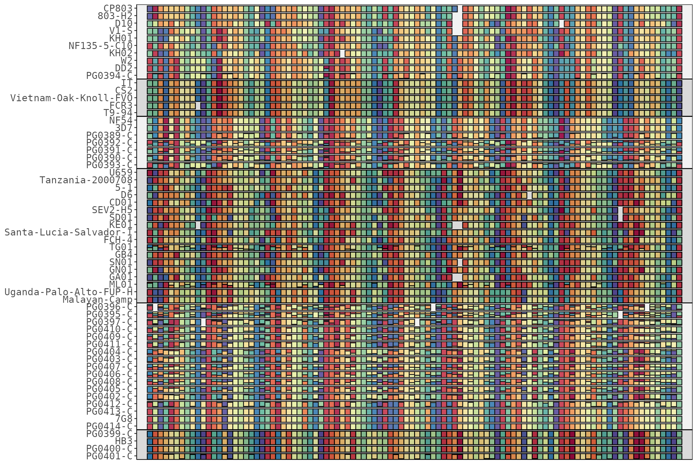
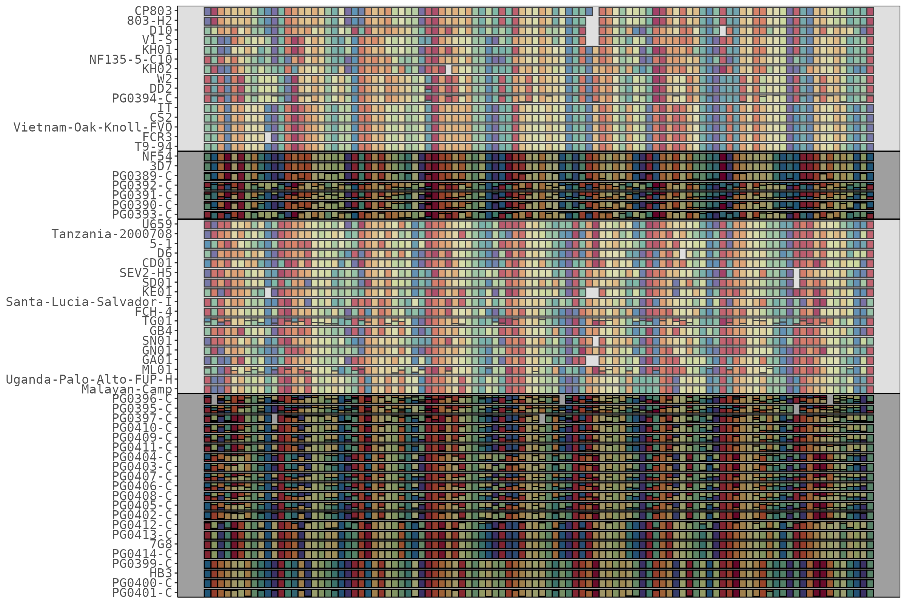
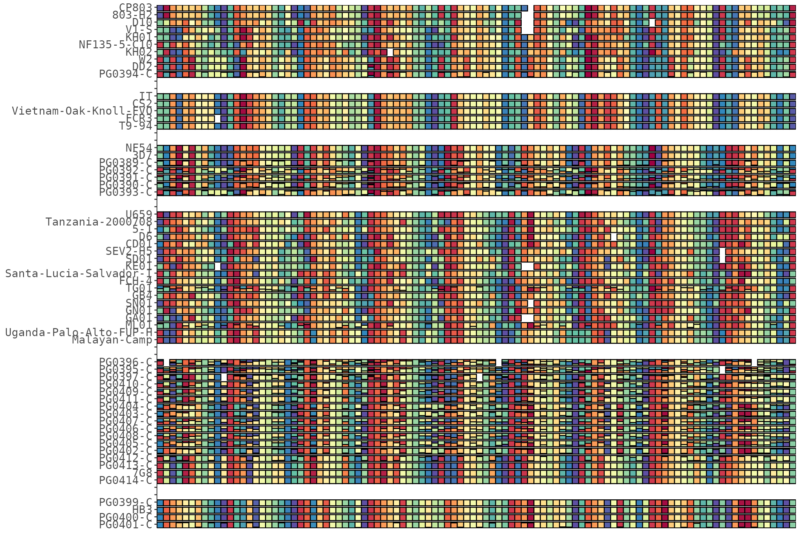
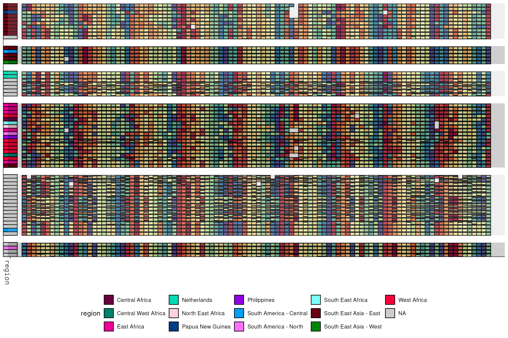

Cluster samples so similar ones sit together, pull the tree and group assignments back out, and show or split the clusters — as alternating background bands, as real physical gaps, or as one auto-sized plot per group.
library(HaplotypeRainbows)
library(ggplot2)
data("pfisolateExample")
data("pfIsosHeomeV1_sampleMeta")
rb <- HaplotypeRainbow$new(
pfIsosHeomeV1,
sample_col = "s_Sample",
target_col = "p_name",
popuid_col = "h_popUID",
rel_abund_col = "c_AveragedFrac"
)
rb$prep(sort = "population_rank")Clustering samples
sort_by_clustering() reorders rows by haplotype sharing
(hierarchical clustering):
rb$sort_by_clustering()
rb$plot(x_axis_labels = FALSE)
Options: cluster on only the major haplotype per cell, restrict to well-covered targets, choose the distance/linkage, or cluster on a specific subset of targets:
rb$sort_by_clustering(by_major_allele = TRUE) # major allele only
rb$sort_by_clustering(coverage_cutoff = 0.90) # targets in >= 90% samples
rb$sort_by_clustering(dist_method = "manhattan", # distance + linkage
hclust_method = "complete")
rb$sort_by_clustering(targets = c("Pf01-0145449-0145622")) # cluster on these targetsThe tree and groups
The fitted hclust is stored; pull it out as an
hclust or dendrogram, or cut it into groups.
cluster_groups() returns a tibble of sample -> cluster,
relabelled in dendrogram order — ready to feed the band/gap/export
helpers or a metadata sidebar.
hc <- rb$get_hclust() # the stats::hclust object
den <- rb$get_dendrogram() # as a dendrogram
grp <- rb$cluster_groups(k = 6) # sample -> cluster
head(grp)
#> # A tibble: 6 × 2
#> s_Sample cluster
#> <chr> <fct>
#> 1 PG0401-C 1
#> 2 PG0400-C 1
#> 3 HB3 1
#> 4 PG0399-C 1
#> 5 PG0414-C 2
#> 6 7G8 2Cluster bands on one plot
add_cluster_bands() overlays alternating bands, one per
cluster group. On a dense grid the translucent overlay alone is subtle,
so expand pushes the bands into visible margin strips and
border draws a line around each block:
p <- rb$plot(x_axis_labels = FALSE)
rb$add_cluster_bands(p, k = 6, expand = 2, border = "black")
Tune the look: more opaque colors, a wider
expand, or
extend_left/extend_right to reach across a
sidebar you add underneath:
p <- rb$plot(x_axis_labels = FALSE)
rb$add_cluster_bands(p, k = 4, expand = 4,
colors = c("#00000060", "#AAAAAA60"), border = "black")
A real gap between clusters
add_cluster_bands() is an overlay — the cells stay
flush. For a real physical gap,
add_cluster_gaps() inserts blank spacer rows between
clusters, so the cells, sidebar and bands all separate together
(everything is positioned by the sample factor). It chains, and
gap = 0 removes the spacers:
rb$sort_by_clustering()$add_cluster_gaps(k = 6, gap = 2)
rb$plot(x_axis_labels = FALSE)
Because the gap is baked into the row positions, a sidebar and cluster bands added on top line up with it:
rb$set_sample_meta(pfIsosHeomeV1_sampleMeta, match_col = "sample", cols = "region")
p <- rb$plot(x_axis_labels = FALSE, y_axis_labels = FALSE)
p <- rb$add_sample_metadata(p, cols = "region", width = 3, target_labels = FALSE)
rb$add_cluster_bands(p, k = 6, expand = 3, colors = c("#00000030", "#AAAAAA30"))
A plot per cluster (or metadata group)
export_groups_pdf() renders one plot per group,
auto-sizing each to its own sample count, and combines
them into a single multi-page PDF (each page correctly sized) via the
qpdf package. With align_targets = TRUE (the default)
sample names are padded to a common width so the plot body / targets
line up at the same position on every page. You pass a
plot_fun that builds the plot for a per-group sub-object,
so every page can carry the same sidebar / annotations:
rb$sort_by_clustering()
rb$export_groups_pdf(
"clusters.pdf",
plot_fun = function(sub) sub$plot(rank_colors = TRUE),
by = "cluster", k = 6
)
# group by a sample-metadata column instead, writing a separate file per group
rb$export_groups_pdf(
"by_region.pdf",
plot_fun = function(sub) {
p <- sub$plot()
sub$add_sample_metadata(p, cols = "country")
},
by = "meta", meta_col = "region", combine = FALSE
)